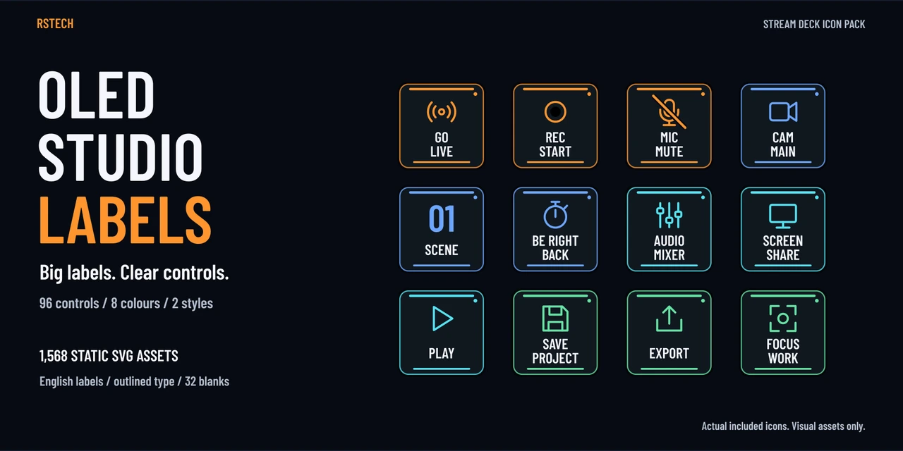
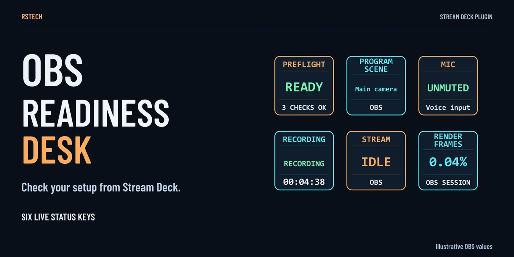
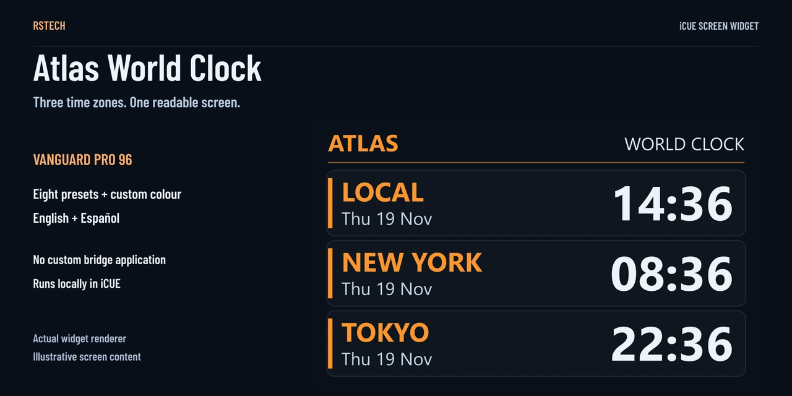
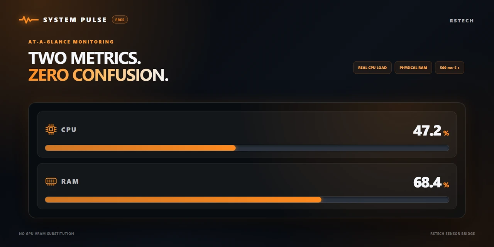
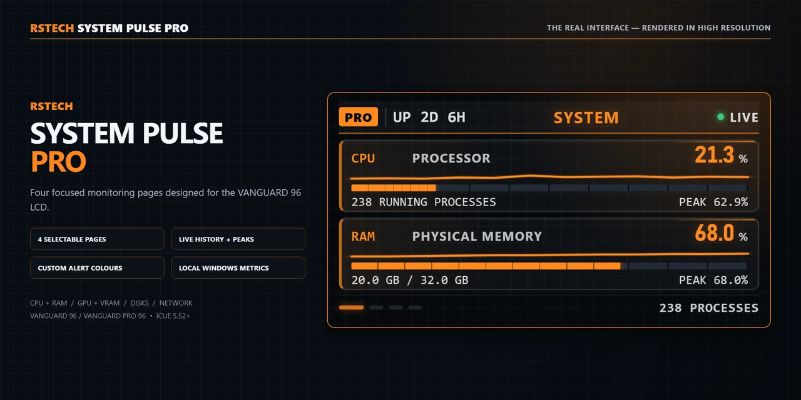

Minimal OLED Spectrum
1.536 iconos nítidos con ocho colores y estados de reposo, aviso y error.
Ver en Elgato MarketplaceHerramientas independientes para Stream Deck e iCUE
Packs de iconos, perfiles de aplicaciones y pantallas en directo para tus dispositivos. Pensados para leerse en el espacio de una tecla.

La colección
1.536 iconos nítidos con ocho colores y estados de reposo, aviso y error.
Ver en Elgato Marketplace
Etiquetas coordinadas para cámaras, audio, escenas y flujos de producción.

Iconos de estudio animados con etiquetas legibles y movimiento en el borde de la tecla.

Atajos de boceto y sólidos, con zoom y giro en Stream Deck + y + XL.

Comprueba la escena, el micrófono, la grabación, la emisión y el renderizado de OBS en tus teclas.

Consulta la hora local y otras dos zonas horarias en una pantalla de teclado Corsair compatible.
Incluye proyectos en desarrollo. Las fichas publicadas indican la disponibilidad.
Ningún proyecto coincide con ese nombre.
Windows · Corsair iCUE
Consulta la actividad del PC en el LCD de tu Corsair VANGUARD 96 o VANGUARD PRO 96. Las dos ediciones de esta página necesitan el bridge de RSTECH para leer las métricas locales de Windows, incluida la RAM física del sistema.

Uso de CPU y RAM física en un panel compacto con colores personalizables. Requiere System Pulse Bridge 1.1.0.

Cuatro vistas para CPU y RAM, gráficos, discos y red. Incluye gráficas, umbrales y rotación de páginas opcional. Requiere System Pulse Bridge 2.0.0.
Esta descarga es el complemento del widget Pro.
Ayuda de System Pulse
Windows 10 u 11 · iCUE 5.52 o superior · CORSAIR VANGUARD 96 o PRO 96
Verificar descargas (SHA-256)Install System Pulse Bridge.cmd. El bridge arrancará con tu sesión de Windows..icuewidget en iCUE y asocia el widget a la pantalla del teclado.localhost:59696 si iCUE lo solicita. Esa dirección conecta con el bridge de tu propio PC.Lee contadores agregados de rendimiento de Windows y los entrega al widget en el mismo PC. Usa una dirección local de solo lectura y funciona sin enviar métricas por Internet.
Ejecuta Uninstall System Pulse Bridge.cmd desde la carpeta descomprimida y retira el widget de iCUE.
Comprueba que el bridge de tu edición está en ejecución y que iCUE permite el acceso local. Algunas métricas Pro dependen del controlador de Windows.